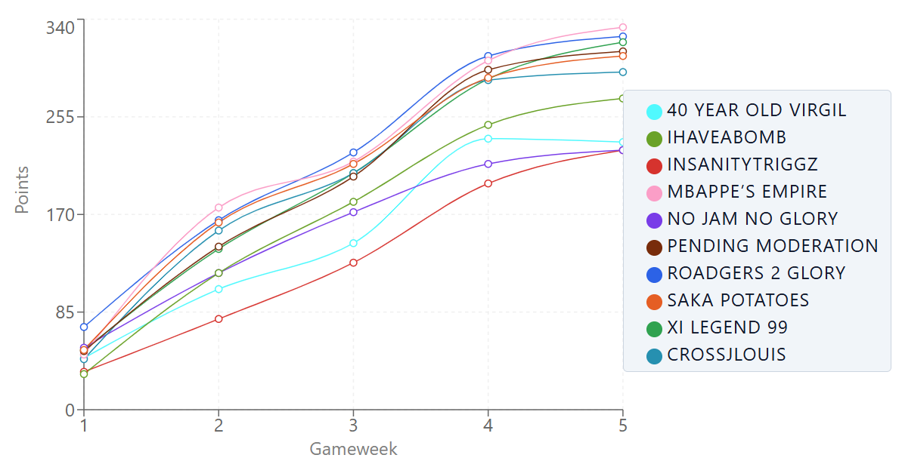

Starboys FPL
A full-stack analytics platform that tracks season-long performance for my 10-person Fantasy Premier League group.
Status: In active development ·
Started:
View the source on GitHub
Why I Built It
Every week, my league argues about who is actually the best manager. The official Fantasy Premier League site shows a snapshot of where everyone stands right now, but it doesn't make it easy to see how the season has unfolded: who climbed, who collapsed, and whose transfers paid off.
I wanted one place where the whole league could see the full story of the season. I also wanted a real project to practice designing a backend that has to deal with an unreliable outside data source.
Season Tracker
Starboys FPL follows the Premier League season gameweek by gameweek. This is how far into the season the app has collected data:
Gameweek 7 of 38
Architecture
The React frontend talks to an Express REST API. The API stores league data in a normalized SQLite database and pulls fresh stats from the Fantasy Premier League API through a Redis cache.
The Data Pipeline
The Fantasy Premier League API doesn't always return complete data, and calling it too often is slow. The ingestion pipeline handles both problems. Each update runs through these steps in order:
- Check the Redis cache for recent gameweek data before calling the FPL API.
- On a cache miss, fetch the latest data from the FPL API and cache the response.
- Validate the response and detect any gameweeks that are missing or incomplete.
- Run the historical backfill script to reconcile those missing gameweeks.
- Write the cleaned results into the normalized SQLite schema.
Features
League members can explore the season on their own across multiple pages built with React Router and Recharts.
- Points progression: each manager's running points total, gameweek by gameweek
- Rank progression: how league positions have shifted over the season
- Season history: stored stats for every member, kept consistent by the backfill script

What's Next
- Head-to-head comparisons between any two managers
- Weekly recap summaries for the league